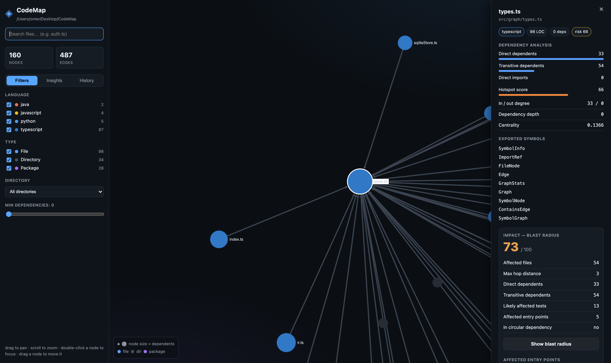

Point CodeMap at any repository and get an interactive architecture map. Visualize files, imports, functions, and classes. Enforce design boundaries, calculate impact scores, and query with AI agents—completely offline.
npm install -g @omertt27/codemap

CodeMap combines fast static parsing with graph intelligence to help you map, monitor, and guard your system design.
No code leaves your machine. Tree-sitter runs as WebAssembly; graphs and caches reside locally in SQLite. Private by design.
Sigma.js & WebGL-powered navigation remains fluid into thousands of nodes. Zoom, search, filter, and trace connections smoothly.
Run deterministic checks on dependency depth, cycles, and custom forbidden imports. Exits non-zero to protect your main branch.
Understand coupling before refactoring. Backwards-BFS lists affected modules, downstream components, and associated test files.
Trace repo evolution directly from git blobs. Visualize code churn heatmaps, stability scores, and architecture diffs over revisions.
Expose a Model Context Protocol (MCP) server so your AI agent (like Claude Code) can search imports, locate violations, and explore graphs.
Getting started is as simple as running a command. CodeMap scans your codebase in seconds, compiles language ASTs, resolves your imports, and spins up a local server.
Explore a mock graph of CodeMap's own codebase. Hover over nodes to see connections, drag them to rearrange, or click to inspect imports, dependents, and blast radius scores.
Don't let codebase structure decay. CodeMap acts as an automated guardian by evaluating your architecture map against custom boundary rules during development and CI.
Define rules for max dependency depth, class size, function count, fan-in/fan-out coupling, and circular dependencies.
Declare glob-based boundaries. Enforce that backend models cannot import UI components, or that shared utils cannot import features.
Compare branches to show health grade change, new dependencies, blast radius shifts, and newly introduced cycles inside your PR description.
AI agents spend precious tokens running recursive grep loops and cat-ing files to understand code flow. CodeMap solves this by exposing an MCP (Model Context Protocol) server.
Equip tools like Claude Code, Cursor, or Windsurf with CodeMap's 20 structured tools to query dependency paths, look up blast radius, analyze history, and build optimized context windows.
claude mcp add codemap -- node /dist/cli.js mcp /path/to/reposrc/db/client.ts?impact_analysis(file: "src/db/client.ts")...src/server.ts (hop distance: 1)src/cli.ts (hop distance: 2)npm test test/db.test.ts test/server.test.ts
Clean separation between directory scanning, AST parsing, graph building, and analysis.
Respects .gitignore and custom config files. Fast directory walk filters out binary files, node_modules, and ignored patterns.
Uses tree-sitter WASM grammars to extract symbols, classes, functions, and import/export bindings in parallel worker threads.
Compiles language-agnostic Intermediate Representation (IR) into a unified dependency graph with file, directory, and package scopes.
Runs graph algorithms (Tarjan SCC, PageRank) locally to output cycles, hot spots, god modules, and layer governance results.
Whether you want to audit a legacy system locally or guard your code quality in CI/CD, CodeMap fits right in.
Spin up the GPU-accelerated local server to navigate and search your code map interactively.
# Install globally
npm install -g @omertt27/codemap
# Serve the map
codemap serve /path/to/repo
# Skip install and run directly
npx @omertt27/codemap serve /path/to/repoAdd checking rules to your GitHub workflow or GitLab CI file. Fail builds if architectural boundaries are crossed.
# Scan & write graph.json
codemap scan .
# Enforce governance limits
codemap governance . --fail-on error
# Analyze pull request delta
codemap analyze-pr --fail-on-violations